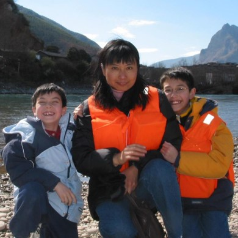
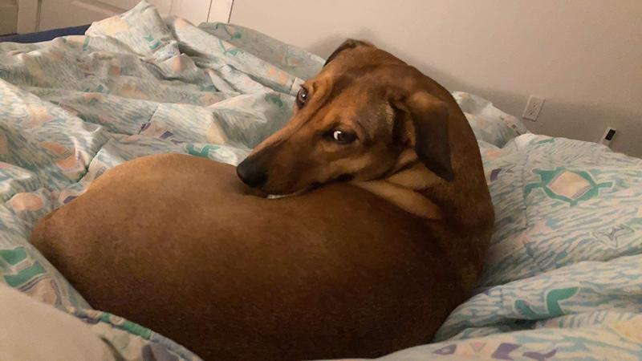

1990s–2011USA & China
Childhood
Shuttled between the US (around Milwaukee) and China (Beijing and Shanghai). Fell in love with astronomy at age 17 after reading From Eternity to Here by Sean Carroll.
About
Academic timeline, career path, and life outside of research.
I spent much of my childhood moving between the United States (around Milwaukee and Brookfield, Wisconsin) and China (Beijing and Shanghai). I fell in love with astronomy and physics at age 17 after reading From Eternity to Here by Sean Carroll, which led me to Harvard University, where I completed my Bachelor’s Degree with Honors in Astrophysics and Physics in 2015.
Working across several undergraduate research projects at Harvard highlighted how deeply modern science relies on statistical analysis and computation, shifting my focus toward astrostatistics and data science. I spent 2015–2016 in Kashiwa, Japan with Alexie Leauthaud and Kevin Bundy at the Kavli Institute for the Physics and Mathematics of the Universe (Kavli IPMU) working on photometric redshifts for the Hyper Suprime-Cam survey, before returning to Harvard to complete my Master’s and PhD in Astronomy (2020) on “Mapping the Milky Way in the Age of Gaia” under Doug Finkbeiner, Charlie Conroy, Alyssa Goodman, and Daniel Eisenstein.
In 2020, I moved to the University of Toronto as a Banting and Dunlap Postdoctoral Fellow working with Gwen Eadie. In 2022, I joined her on the faculty as an Assistant Professor in Astrostatistics jointly appointed between the David A. Dunlap Department of Astronomy & Astrophysics and the Department of Statistical Sciences, where we co-lead the Astrostatistics Research Team (ART).

My academic path across the United States, China, Japan, and Canada, and how my research evolved from observational galaxy evolution to statistical inference, Galactic mapping, and scientific AI.
Outside of work, I mostly enjoy hanging out at home or going out with my wife, our two dogs, and our son. I also watch way too much anime, play way too many video games, and have a supremely unhealthy love of junk food and soda.
